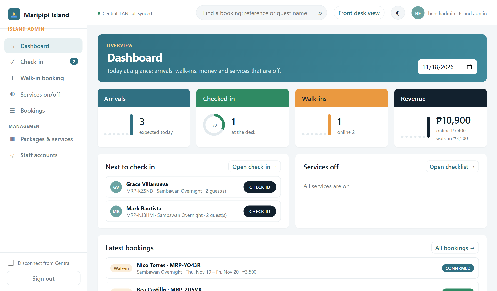

| Task | File / evidence (repository github.com/Abylon10/BookingSystem) |
|---|---|
| 1.1 – 2.3 | docs/System-Design-and-Initial-Considerations.pdf, docs/Framework-and-Flowcharts.pdf, docs/Task-2.3-Initial-System-Framework.pdf, DESIGN.md, gRPC contract proto/booking.proto |
| 3.1 | Baseline v1: git tag baseline-v1-2026-10-29, screenshot docs/evidence/2026-10-29-baseline-island-console.png. v2 baseline: commit "v2: packages, hold/pay/confirm, node admins, parallel reports, guest app" (12 Nov) |
| 3.2, 4.3 | v3 commits of 18 Nov (prices, build-your-own, roles, refunds, records, registered islands, front-desk page, Google log-in, hourly extra time). Live central: biliran-central.onrender.com with the three island nodes. Screenshot right. |
| 4.1, 4.2, 5.2 | docs/evidence/2026-11-12-hotspot-tests.txt (4 laptops, real hotspot) and the 18 Nov benchmark: search fan-out 2.94× (171 vs 503 ms), reports 3.03× with 4 worker threads, ~149 req/s at 100 clients with 0% errors, 0 oversells in 5 races, 1 booking from 20 duplicate requests, 1 of 4 simultaneous check-ins. Scripts in loadtest/ |
| 5.1 | 12 functional test cases (all pass) and concurrency tests: Technical Documentation ch. 9–10 |
| 6.1, 7.1 | Resortify_Technical_Documentation.docx/.pdf (31 pages, includes the performance evaluation report) and Resortify_Presentation.pptx/.pdf (20 slides with speaker notes); README.md, docs/TEAM-SETUP.md, docs/DEPLOY-CLOUD.md |

Current version (tasks 3.2 – 4.3): Maripipi island admin dashboard of the final system: arrivals, check-ins, walk-ins and revenue split into online and walk-in, next guests to check in and latest bookings (fictional demo data). Captured 18 Nov 2026.